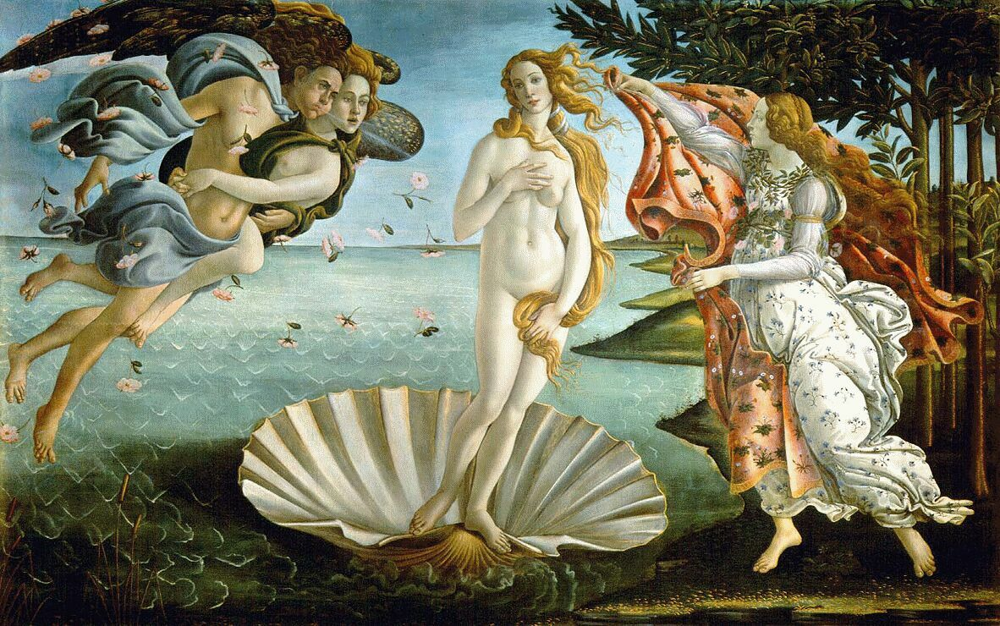
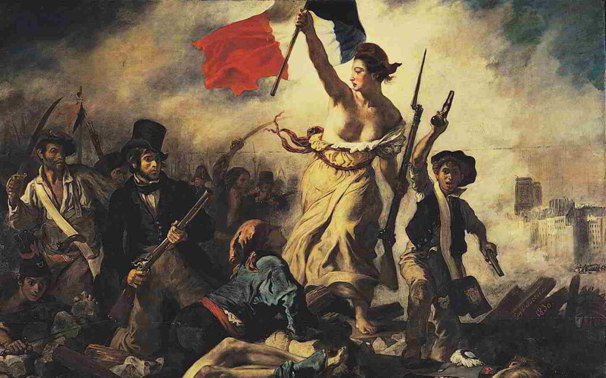
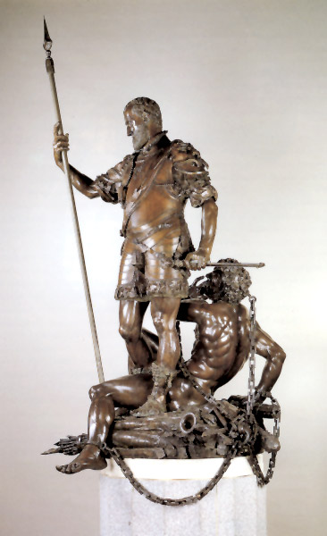

Contexto histórico y social
La Edad Moderna, que abarca aproximadamente desde finales del siglo XV hasta finales del XVIII, fue un período de intensos cambios que transformaron profundamente la sociedad europea y, por extensión, el mundo. Este periodo estuvo marcado por el Renacimiento, una revalorización de las artes y las ciencias inspirada en la antigüedad clásica, así como por el Reforma Protestante y la consolidación de los estados nacionales. Estos acontecimientos crearon un ambiente propicio para el florecimiento de nuevas formas de expresión artística.
Además, la Revolución Científica introdujo una visión más racional y empírica del mundo, lo que influyó significativamente en la manera en que los artistas concebían la realidad y la representación. La expansión marítima y el encuentro con nuevas culturas también aportaron una riqueza de nuevas inspiraciones y técnicas que los artistas incorporaron en sus obras.
La sociedad de la Edad Moderna estaba profundamente estratificada, pero con el auge de la burguesía, surgió un nuevo público para las artes. Este cambio social facilitó el patrocinio de artistas por parte de la clase media, además de la nobleza y la Iglesia, lo que permitió una mayor diversidad en los temas y estilos artísticos.
Principales corrientes artísticas
Durante la Edad Moderna, emergieron diversas corrientes artísticas que reflejaron los cambios socioculturales de la época. Entre las más destacadas se encuentran el Renacimiento, el Barroco, el Rococó y el Neoclasicismo. Cada una de estas corrientes aportó elementos únicos que enriquecieron el panorama artístico de su tiempo.
El Renacimiento se caracterizó por un renovado interés en la anatomía humana, la perspectiva y la simetría. Artistas como Leonardo da Vinci y Miguel Ángel buscaron representar la belleza idealizada y la armonía en sus obras, inspirándose en los principios de proporción y equilibrio de la antigüedad clásica.
El Barroco, por su parte, introdujo un contraste más dramático, con un uso intenso de luces y sombras, y una mayor expresividad emocional. Este estilo buscaba evocar una respuesta emocional en el espectador y se manifestó en obras de gran dinamismo y ornamentación, como las de Caravaggio y Bernini.
El Rococó continuó la tradición barroca pero con un enfoque aún más decorativo y ligero, predominando temas de la aristocracia y la vida cortesana. Artistas como Jean-Honoré Fragonard y François Boucher ejemplificaron esta tendencia con sus obras llenas de gracia y elegancia.
Finalmente, el Neoclasicismo reaccionó contra el excesivo ornamento del Rococó, abogando por un retorno a la simplicidad y la sobriedad inspirada en la estética clásica. Este movimiento, representado por artistas como Jacques-Louis David, enfatizaba los valores de la razón y la moralidad, reflejando los ideales ilustrados de la época.
Artistas destacados
La Edad Moderna contó con una plétora de artistas cuya influencia perdura hasta nuestros días. Cada uno aportó innovaciones y estilos que definieron las corrientes artísticas de su tiempo. Entre los más prominentes se encuentran Leonardo da Vinci, Michelangelo, Caravaggio, Rembrandt, y Francisco Goya.
Leonardo da Vinci es reconocido no solo por sus obras maestras como “La Mona Lisa” y “La Última Cena”, sino también por su incursión en múltiples disciplinas, desde la anatomía hasta la ingeniería, lo que le confirió una perspectiva única sobre el arte y la ciencia.
Michelangelo destacó como escultor, pintor y arquitecto, con obras emblemáticas en la Capilla Sixtina y la escultura de David. Su habilidad para captar la forma humana con una expresividad sin igual lo consolidó como uno de los genios del Renacimiento.
Caravaggio, pionero del Barroco, revolucionó la pintura con su uso innovador del claroscuro y sus representaciones realistas y dramáticas de escenas religiosas y mitológicas. Su influencia se extendió a numerosos artistas posteriores que adoptaron su estilo intenso y emotivo.
Rembrandt es uno de los más grandes maestros del Barroco holandés. Su dominio de la luz y la sombra, así como su habilidad para retratar la complejidad emocional de sus sujetos, le otorgaron un lugar destacado en la historia del arte.
Francisco Goya, considerado el último artista del Antiguo Régimen y el primero de la modernidad, exploró temáticas oscuras y críticas sociales en sus obras. Su transición desde pinturas ilustrativas a piezas más expresionistas refleja los tumultuos cambios políticos y sociales de su tiempo.
Innovaciones y técnicas en el arte de la Edad Moderna
La Edad Moderna fue una era de experimentación y avances técnicos en las artes visuales. Los artistas de este período no solo innovaron en términos de estilo y contenido, sino que también desarrollaron nuevas técnicas que enriquecieron su capacidad expresiva.
La perspectiva lineal fue perfeccionada durante el Renacimiento, permitiendo a los artistas crear la ilusión de profundidad en sus obras. Este avance técnico fue fundamental para lograr composiciones más realistas y tridimensionales.
El uso del claroscuro, una técnica que explora el contraste entre luces y sombras, fue popularizado por artistas como Caravaggio. Esta técnica añadía drama y profundidad emocional a las pinturas, destacando ciertos elementos y creando un efecto teatral.
La técnica del óleo sobre lienzo ganó predominancia durante esta época, permitiendo una mayor versatilidad en la representación de colores y detalles finos. Esto facilitó la creación de obras más ricas y complejas, con matices sutiles y texturas variadas.
Además, la grabado y la litografía se desarrollaron como medios para la reproducción y difusión de obras de arte. Estas técnicas permitieron que las obras de artistas famosos circularan más ampliamente, influenciando a una audiencia más extensa.
La arquitectura también experimentó notables innovaciones con la introducción de nuevas formas y estructuras. El desarrollo de la cúpula en edificios como la Basílica de San Pedro de Miguel Ángel reflejó una maestría técnica y una ambición estética sin precedentes.
Legado e influencia del Arte Moderno
El impacto del arte de la Edad Moderna se extiende hasta la actualidad, influyendo en diversas corrientes y movimientos posteriores. La combinación de técnicas innovadoras y la exploración temática de este período establecieron las bases para la evolución del arte en los siglos siguientes.
El Renacimiento revitalizó el interés por la antigüedad clásica, inspirando a movimientos como el Neoclasicismo y, en última instancia, influyendo en estilos contemporáneos que buscan un equilibrio entre tradición e innovación.
El Barroco, con su expresividad y dramatismo, ha dejado una huella duradera en la manera en que se aborda la narrativa visual y la representación emocional en el arte moderno y contemporáneo. Su énfasis en el movimiento y la emoción se refleja en estilos como el Romanticismo y el Expresionismo.
Las técnicas desarrolladas durante la Edad Moderna, como la perspectiva lineal y el claroscuro, continúan siendo fundamentales en la enseñanza y práctica artística actual. Además, la evolución de los medios y materiales utilizados por los artistas modernos ha abierto nuevas posibilidades para la creación artística.
El legado de artistas como Leonardo da Vinci, Michelangelo y Goya perdura no solo en sus obras, sino también en el impacto que tuvieron en generaciones posteriores de artistas. Su búsqueda constante de la perfección técnica y la profundidad conceptual sigue siendo una fuente de inspiración.
En el ámbito arquitectónico, las catedrales y palacios diseñados durante la Edad Moderna continúan siendo referentes de la grandeza y la complejidad estructural. Estos monumentos no solo son símbolos de poder y riqueza, sino también testimonios de la capacidad humana para la creatividad y la innovación.
Finalmente, el arte de la Edad Moderna ha contribuido significativamente a la formación de un patrimonio cultural global. Las obras de este período son reconocidas y valoradas en todo el mundo, sirviendo como puentes entre diferentes culturas y épocas, y promoviendo una apreciación universal del arte como expresión fundamental de la condición humana.





EL NACIMIENTO DE VENUS
El cuadro El nacimiento de Venus o La nascita di Venere de Sandro Botticelli fue pintado entre los años 1482 y 1485, en pleno contexto histórico del Renacimiento. Se trata del primer cuadro en tela pintado en Tuscania, Italia. La obra mide aproximadamente 1,80 metros de alto y 2,75 metros de largo y se encuentra actualmente en el Museo Uffizi en Florencia, Italia.
El nacimiento de Venus se inscribe en la sensibilidad propia del Renacimiento, tiempo en que se renovó la representación de los mitos de la Antigüedad Clásica, en los cuales los renacentistas encontraban verdades escondidas sobre la naturaleza humana. Esto significó una verdadera defensa del humanismo antropocéntrico frente al teocentrismo del pasado.
MONALISA
La Gioconda fue elaborada por Leonardo entre 1503 y 1519. La tesis más aceptada sugiere que se trata de un encargo del mercader de telas Francesco del Giocondo. Como era común en da Vinci, nunca dio por concluido el cuadro, de manera que se negó a entregarlo y estuvo en su posesión hasta el final de sus días.
Solo después de su muerte, o quizá poco antes de morir, el cuadro fue adquirido por el rey Francisco I de Francia en pleno siglo XVI, quien llegó a pagar doce mil francos por ella. Tras la muerte de Francisco I, la obra fue destinada a Fontainebleau, luego a París y, por último, a Versalles. Después de la Revolución francesa, al considerarla parte del tesoro del Estado francés, fue entregada a la custodia del Museo del Louvre en 1797.
LA ÚLTIMA CENA
El historiador de arte Ernst Gombrich afirma que en esta obra Da Vinci no temió hacer la correcciones de dibujo necesarias para dotarla de total naturalismo y verosimilitud. Esto era algo poco visto en la pintura mural precedente, caracterizada por sacrificar deliberadamente la corrección del dibujo en función de otros elementos. Fue justamente esa la intención al mezclar la pintura al temple y el óleo.
En su versión de la última cena, Leonardo quiso mostrar el momento exacto en que Jesús declara la traición de uno de los presentes (Jn 13, 21-31). La conmoción se puede apreciar en el dinamismo de los personajes que, en lugar de permanecer inertes, reaccionan enérgicamente ante el anuncio.
Así, introduce este tipo de dramatismo y tensión entre los personajes, cosa nada habitual en el arte del periodo. De todos modos, el dinamismo no le impide lograr que la composición goce de gran armonía, serenidad y equilibrio, con lo que preserva los valores estéticos del Renacimiento.
LA LIBERTAD GUIANDO AL PUEBLO
Esta pintura fue realizada en 1830 por el artista francés Eugène Delacroix. Representa la Revolución de Julio de 1830 en Francia, un levantamiento popular que ocurrió en París contra el rey Carlos X. El pueblo se rebeló debido a decisiones del rey que limitaban la libertad de prensa y fortalecían el poder absoluto de la monarquía.
La obra muestra a una mujer que simboliza la Libertad, guiando al pueblo sobre las barricadas. Ella sostiene la bandera de Francia y avanza con firmeza, representando la lucha por los derechos y la justicia. A su alrededor aparecen personas de diferentes clases sociales, lo que simboliza la unión del pueblo en la lucha por la libertad.
Es una obra del Romanticismo, movimiento artístico que destacaba la emoción, el heroísmo y la lucha por ideales como la libertad.
CARLOS V Y EL FUROR
Esta escultura fue pintada en 1548 por el artista italiano Tiziano Vecellio (Tiziano). Representa al emperador Carlos V después de su victoria en la Batalla de Mühlberg (1547), cuando derrotó a los príncipes protestantes del Sacro Imperio Romano Germánico. En esa época, Europa estaba marcada por conflictos religiosos entre católicos y protestantes.
En la pintura, Carlos V aparece dominando al “Furor”, una figura que simboliza la violencia, el caos y la rebeldía. El emperador se muestra firme y victorioso, representando el orden y la autoridad. La obra transmite la idea de que el poder imperial controla el desorden y protege la unidad del Imperio.
Es una obra del Renacimiento que busca exaltar la figura del gobernante como líder fuerte y defensor de la estabilidad política y religiosa.